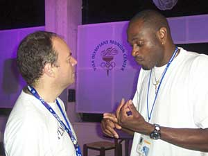
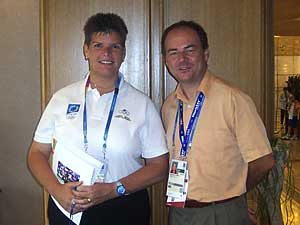

|
||
| Vernon JONES (DeKalb County/US), Marc Daniel GUTEKUNST (DITC), Abdul Ghani TABBALAT (JOR) | |
| Jean-Pierre ALAIN (HAI), Jean-Edouard BAKER (HAI), Marc Daniel GUTEKUNST (DITC) | |
|  | Marc Daniel GUTEKUNST (DITC) in a deep discussing with Kevin YOUNG (US) at the VISA OLYMPIANS Reunion Center |
| Vernon JONES (DeKalb County/US), Dannette LEININGER (DITC, ’92, ’96 US Olympian), Habu GUMEL (NGR), Marc Daniel GUTEKUNST (DITC) | |
| Prince Albert of MONACO giving a Monaco Olympic pin to Jimmy PINO (WOA/COL) | |
| Alain JEAN-PIERRE (HAI), Vernon JONES (DeKalb County/US), Jean-Edouard BAKER (HAI), Marc Daniel GUTEKUNST (DITC), Prince Albert of MONACO (IOC) | |
| Liston BOCHETTE (WOA/PUR), Albert of MONACO (IOC), Cheryl WILLIAMS (FNT), Marc Daniel GUTEKUNST (DITC) | |
| Vernon JONES (DeKalb County/US), US Congresswoman Diane WATSON, Steve ALLEN (DITC) | |
| Congresswoman Diane WATSON , Steve ALLEN (DITC), Athens Mayor Dora BAKOYANNIS, Ambassador Thomas MILLER (US Ambassador to Greece) and Mrs. MILLER | |
| Early REECE (CFO, USOC), Marc Daniel GUTEKUNST (DITC), Steve ALLEN (DITC), Francisco CAMPO (IR USOC), Curt HAMAKAWA (IR USOC) | |
| US Congresswoman Diane WATSON, Steve ALLEN, Yvette JARVIS (Athens Councilwoman), Marc Daniel GUTEKUNST (DITC) | |
| Dannette LEININGER (DITC), Cheik Talal Fahad Al Ahmad AL-SABAH ( KUW), Marc Daniel GUTEKUNST (DITC) | |
|  | Nicole HOEVERTSZ (ARU), Marc Daniel GUTEKUNST (DITC) |
| Marc Daniel GUTEKUNST (DITC), Hamad KALKABA Malboum (CMR), Dan NGEREM (NGR) | |
| Panathinaiko Stadium where the 1st Modern Olympic Games were held in 1896, Marc Daniel GUTEKUNST (DITC) wearing the DeKalb Medical Center SPORTS Medicine T-shirt | |
| Marc Daniel GUTEKUNST (DITC) and Dannette LEININGER (DITC) at Panathinaiko Stadium | |
| André HOPE (SLW), Marc Daniel GUTEKUNST (DITC) | |
| H.A. PUFFA (GHA), Benson BABA (GHA), Marc Daniel GUTEKUNST (DITC), Dannette LEININGER (DITC), Ebo QUANSAH (GHA) | |
| View Next Page >> |